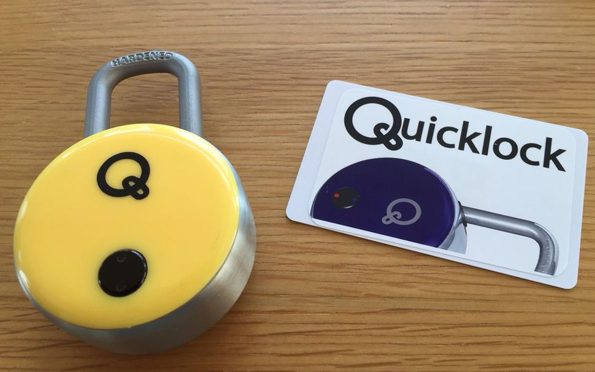
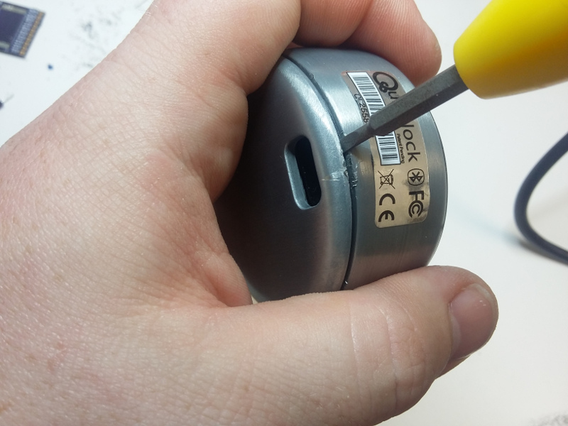
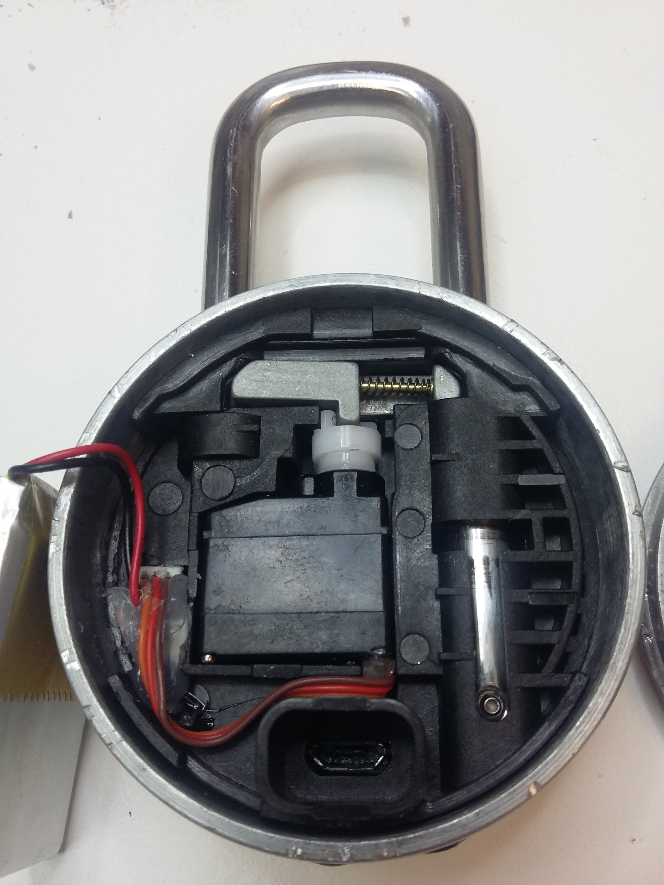
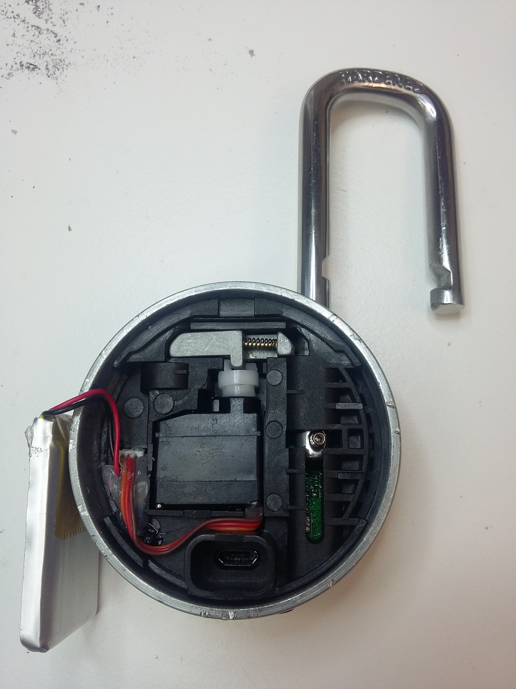
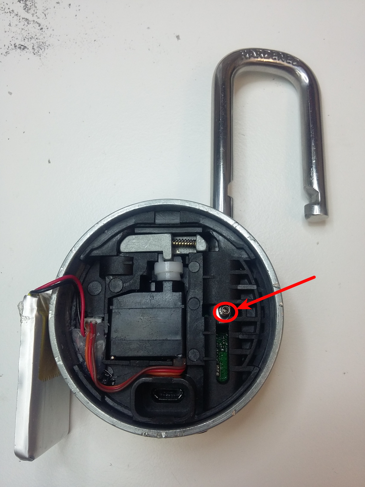
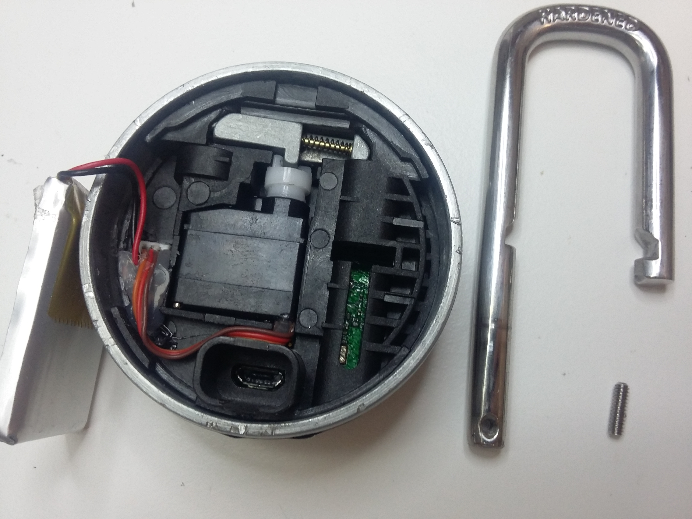
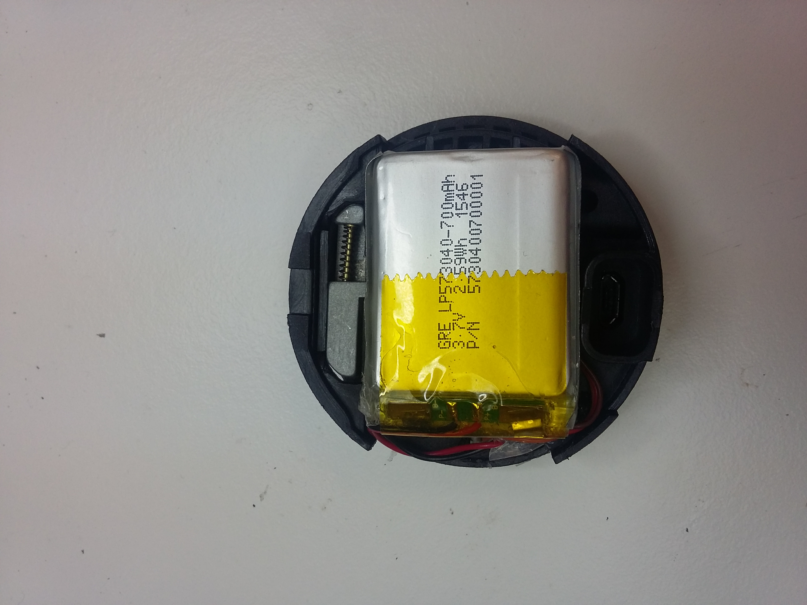
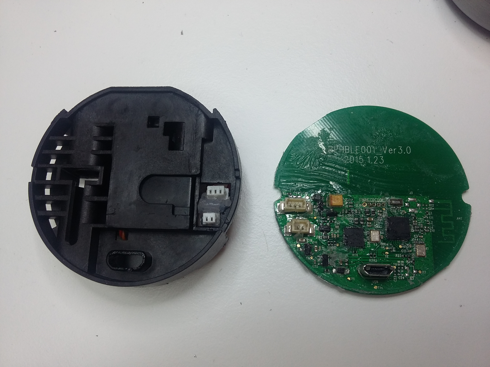
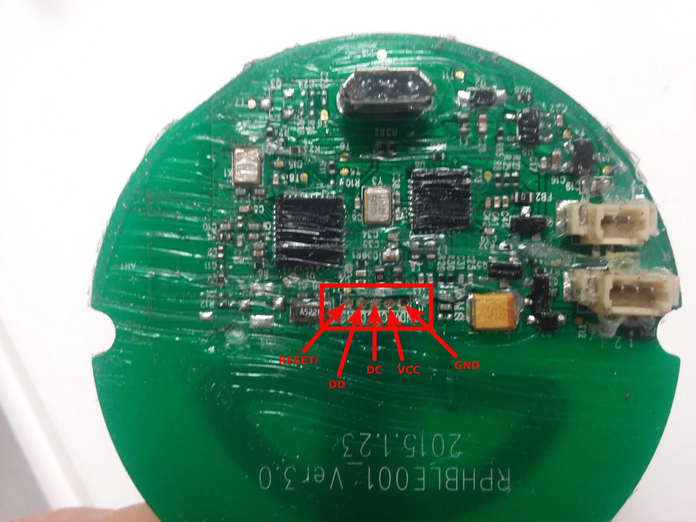
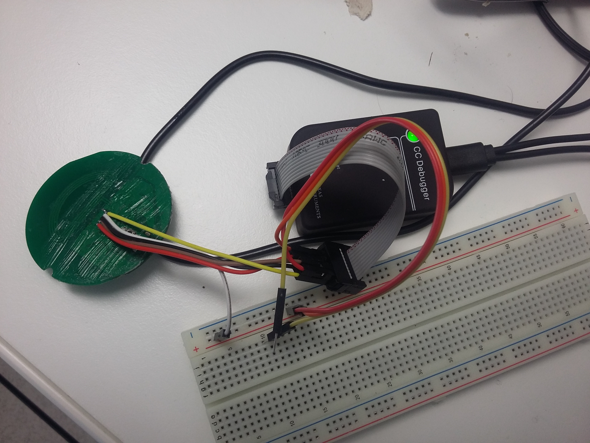

TheQuickLock Padlock¶
TheQuickLock (https://www.thequicklock.com/) sells a BLE/NFC enabled padlock. This padlock does not require any Internet access to be operated, a mobile application for iOS and Android is provided.
{kind=link}
Forensic Summary¶
| Category | Feature | Present |
|---|---|---|
| Data collection | Console/Shell | No |
| Extractible data from memory | Yes | |
| Traceability / Accountability | Real-Time Clock (RTC) | No |
| System log(s) | No | |
| Event log(s) | Yes | |
| Power management | Visual indicator | Yes, press button |
| Can be easily powered off | No |
Device evaluation¶
Press the button on the padlock, it will blink in blue if the device is powered on.
If the button does not blink, the internal battery may be discharged and the device powered off.
The device advertises itself using Bluetooth Low Energy with the name Padlock!.
Accessing the SoC¶
This padlock is quite easy to open (well, this is also a known weakness of this model), you only need:
- a tiny flat screw driver
- a T6 screw driver
- a sharp blade
- antistatic tweezers
First, insert your tiny flat screw driver between the two pieces of the padlock’s body, as shown below. Try to separate the two halves by twisting your screw driver along the line.
{kind=link}
Once the body opened, remove the tiny piece of plastic located under the LiPo battery to access the locking mechanism, as show below:
{kind=link}
Release the shackle by pressing the moving parts as shown below, then open the padlock manually.
{kind=link}
Unscrew the tiny screw used to hold the shackle into the body, then remove the shackle as shown below.
 {kind=link}
{kind=link}
Once the shackle removed, extract the main body and disconnect the main PCB from the battery and the servo, as shown below.
 {kind=link}
{kind=link}
The PCB is covered with silicon, use a sharp blade to clean it near the debug connector (see next section).
Extracting data from memory¶
This padlock is built upon a CC2541 2.4GHz SoC from Texas Instruments, and offers a CC-Debugger compatible port to access its internals. This debug port must be used to access the internal flash memory of this SoC, ideally by using a genuine CC-Debugger from Texas Instruments.
{kind=link}
Connect these pins to the CC-Debugger (make sure to connect Vcc on both 3.3V (pin 9 of CC-Debugger connector) and Target Voltage Sense (pin 2 of CC-Debugger connector) in order for the CC-Debugger to correctly detect the chip.
Then, use TI Flash Programmer utility from Texas Instruments on a Windows computer (it also works in a virtual machine like VirtualBox with USB enabled) to extract the flash content. This tool produces a dump file following the IHex file format, it must be converted to binary before investigating.
{kind=link}
This can be done with objcopy by using the following command:
$ objcopy -I IHex -O binary <input ihex file> <output binary file>
Extracting the event log and the PIN code¶
TheQuickLock’s padlock event log can be extracted using our dedicated tool. This tool requires a flash dump to extract information from.
This tool is able to recover the event log stored in the padlock as well as the PIN code set for this latter.
$ python tql-extract-logs.py firmware-thequicklock.bin
[i] PIN code is: 14451616
[i] Extracting events from first page (0x3D800)
[2016-07-01T12:01:30][ OPEN ] Dixon
[2016-07-15T17:06:54][ OPEN ] virtu
[2016-07-15T17:10:38][ OPEN ] virtu
...
[2017-01-17T11:58:33][ OPEN ] victor
[2017-01-17T13:06:41][ OPEN ] victor
[2017-01-17T13:07:12][ OPEN ] victor
[i] Extracting events from second page (0x3E000)
[2017-01-17T13:10:27][ OPEN ] victor
[2017-01-17T13:22:53][ OPEN ] victor
...
[2017-04-06T21:08:56][ OPEN ] digital
[2017-04-10T10:55:06][ OPEN ] digital